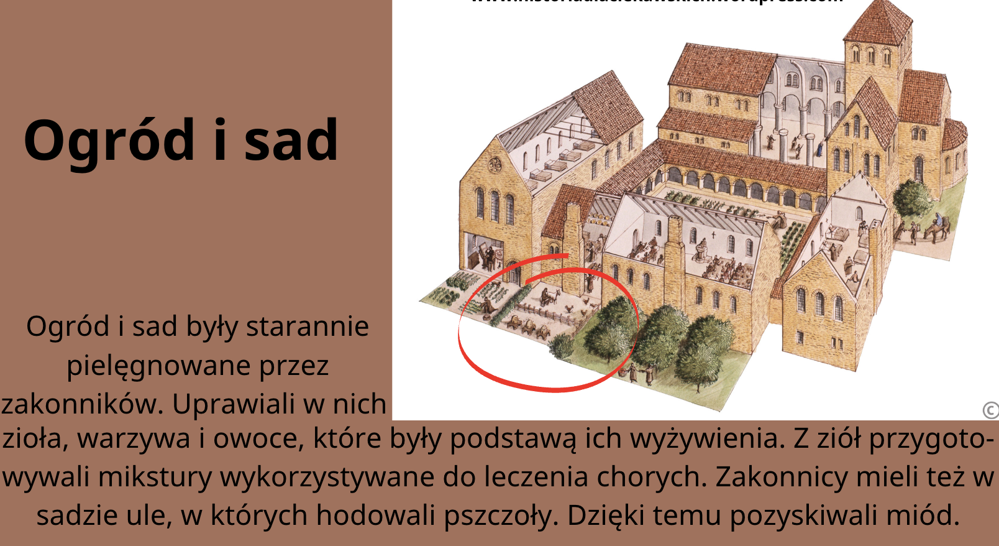
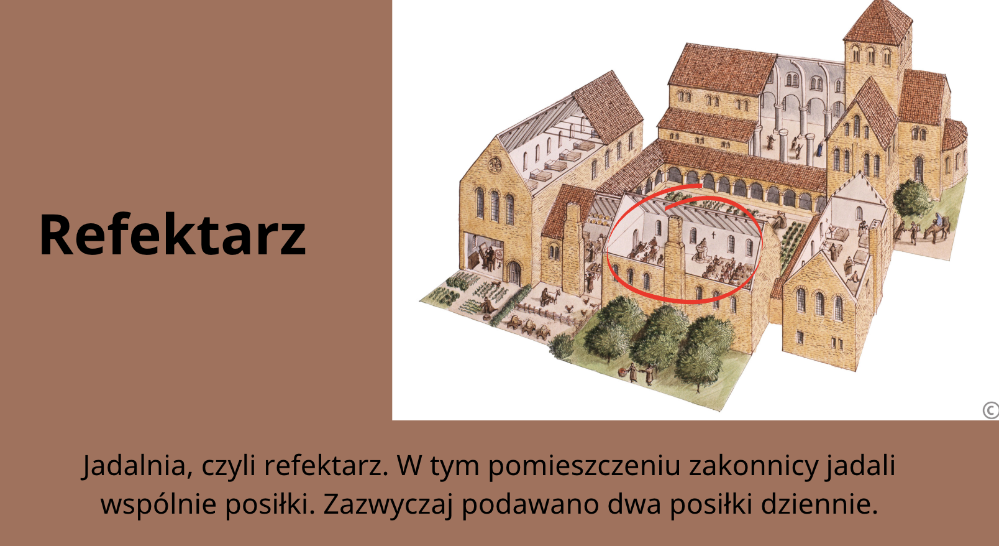
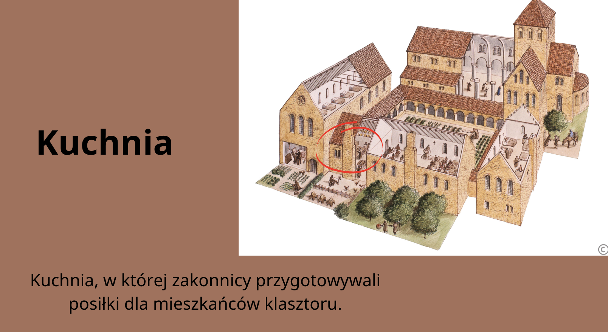
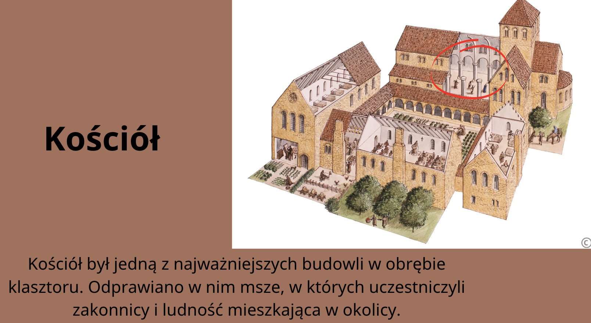
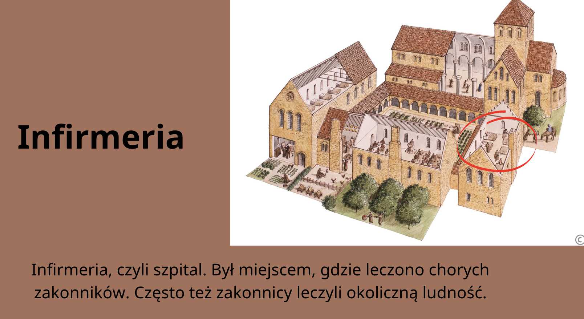
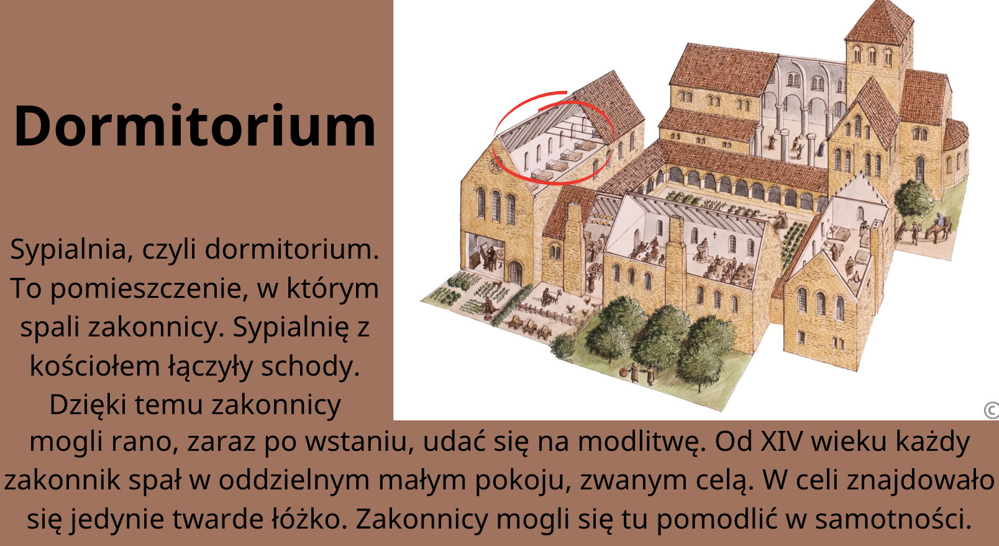
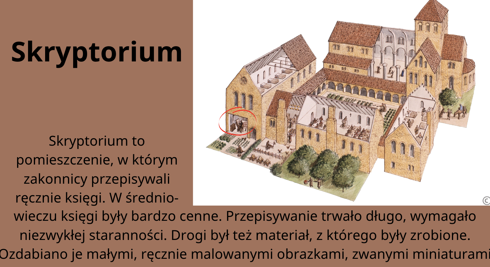
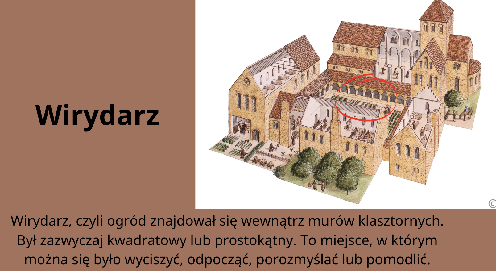

👤 Kim byli zakonnicy?
Zakonnicy, nazywani też mnichami, należeli do duchowieństwa, czyli ludzi zajmujących się sprawami Kościoła.
Tworzyli oni zakony chrześcijańskie – wspólnoty osób, które chciały służyć Bogu.
Mnisi składali śluby:
- ubóstwa (nie posiadali majątku),
- czystości (nie zakładali rodzin),
- posłuszeństwa (słuchali przełożonych).
Żyli według reguły zakonnej, czyli zbioru zasad, które określały ich codzienne życie.
🏠 Czym był klasztor?
Klasztor był miejscem, w którym mieszkali zakonnicy.
Był to zazwyczaj zespół budynków, w skład którego wchodziły:
- kościół,
- cele (pokoje mnichów),
- refektarz (jadalnia),
- ogród,
- skryptorium,
- biblioteka.








⏰ Życie w klasztorze
Dzień mnicha był bardzo uporządkowany:
- zaczynał się przed wschodem słońca,
- mnisi modlili się kilka razy dziennie,
- dużo pracowali,
- żyli skromnie i spali niewiele.
W celach mnisi czytali i modlili się w ciszy.
🌱 Zakony a rolnictwo
Zakonnicy mieli duży wpływ na rozwój średniowiecznego rolnictwa:
- uprawiali warzywa, owoce i zioła,
- wprowadzali nowe narzędzia (np. żelazny pług),
- zakładali młyny wodne,
- uczyli chłopów lepszych metod uprawy.
Dzięki temu ludzie mieli więcej żywności.
📚 Zakony a wiedza i pisanie
Mnisi byli jednymi z najbardziej wykształconych ludzi w średniowieczu.
- znali łacinę,
- przepisywali księgi w skryptorium,
- tworzyli kroniki.
Najstarszą polską kronikę napisał Gall Anonim – zakonnik.
Przy klasztorach powstawały pierwsze szkoły.
🏛️ Najstarsze zakony w Polsce
Do najważniejszych zakonów należeli:
- benedyktyni – najstarszy zakon (np. Tyniec),
- cystersi – rozwój rolnictwa,
- franciszkanie – pomoc ubogim,
- dominikanie – nauczanie.